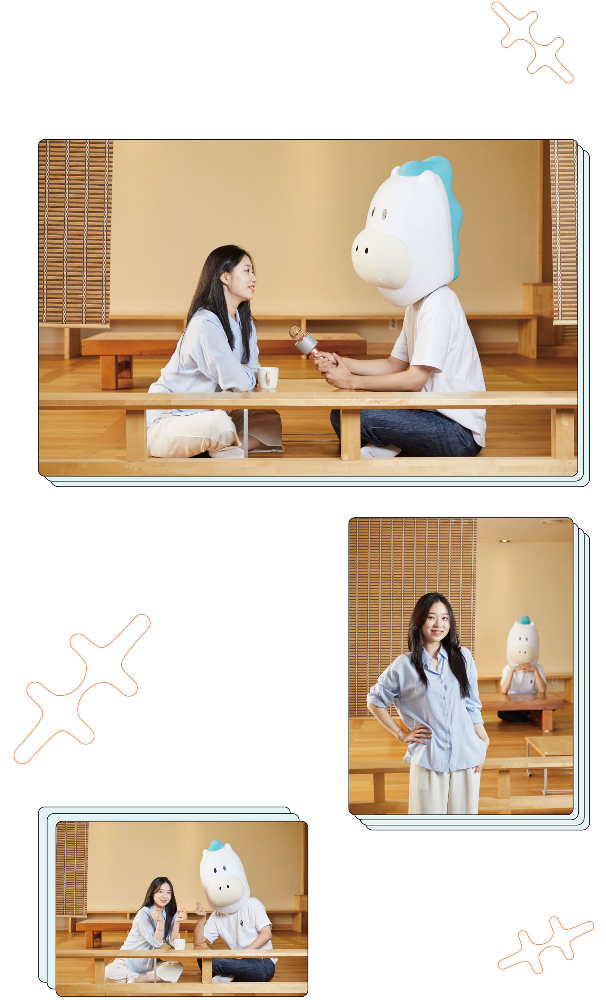

연습도 실전처럼,
철저한 시간 관리가 비결이지요
중어중문학과 22학번
박주율
슝슝이가 만난 중어중문학과 22학번 박주율 학생은 평소 외국어에 관심이 많았습니다. 또 고등학교 담임선생님도 인정할 정도로 논술과 글쓰기에 특기를 보였다고 합니다. 자신의 특기와 적성을 잘 살펴 그에 맞는 전형을 선택하고 연습 때도 실전처럼 시간을 정해 논술 연습을 통해 노력해온 것이 2022학년도 논술우수자전형에서 빛을 발했음을 전했습니다.
Q. 논술우수자전형을 택한 이유는 무엇이었나요?
평소 내신 성적과 학생부 기록에서 부족함을 느끼고 특기를 살려 대학에 합격할 수 있는 전형을 찾던 중이었습니다. 마침 담임 선생님께서 제 수행평가를 눈여겨보시더니 논술전형을 추천해주셔서 관심을 가지게 되었습니다. 고3 생활을 시작하면서부터 최종적으로 논술우수자전형을 준비해야겠다고 마음먹게 되었습니다.
Q. 수험생 시절 중점을 두고 준비하고 노력한 것은 무엇인가요?
저는 시간 분배를 잘하지 못하는 편이었습니다. 그 때문에 평소 연습할 때도 실전처럼 정해진 시간에 맞춰 글을 쓰는 습관을 들였습니다. 복습할 때는 단순히 답안을 다 외우는 데에서 멈추지 않고 어떻게 이런 답안이 나왔는지 논리적으로 파악하고 키워드 중심으로 쓰는 연습을 꾸준히 했습니다.
Q. 입시를 준비하며 가장 어려웠던 부분은 무엇이었나요?
대학에 합격하지 못할 수도 있다는 불안감에 휩싸여 괴로운 적이 있었습니다. 오르지 않는 모의고사 성적에 좌절하기도 했었는데요. 그때마다 함께 입시를 준비하는 친구들과 잠시 바람을 쐬러 다녀오는 것이 도움이 되었습니다. 지치고 힘이 들 때는 계속 자리에 앉아있는 것보다 친구들과 대화를 나누며 머리를 식히는 것이 스트레스 해소에 훨씬 도움이 될 것입니다.
Q. 진학을 준비하는 예비 후배들에게 한 말씀 부탁드립니다.
나태주 시인의 시를 굉장히 좋아하는데요. 그중에도 수능 필적확인문구로도 나왔었던 ‘많고 많은 사람 중에 그대 한사람’이라는 문구를 제일 좋아합니다. 내가 특별하고 소중하다고 위로해주는 느낌이어서 이 문구를 떠올릴 때마다 힘이 났습니다. 여러분들 모두 많고 많은 사람 중에 딱 한 사람, 특별한 사람이니까 좌절하지 말고 힘내시길 바랍니다. 내년에 숭실대에 입학하면 정말 다양한 활동들이 기다리고 있습니다. 기대해도 좋습니다.
박주율 학생의 합격 포인트 3
1. 자신의 장점을 파악한 전형 선택
2. 정해진 시간에 맞춰 논리적 글쓰기 연습
3. 적절한 스트레스 해소